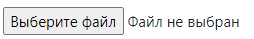
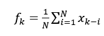
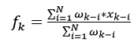
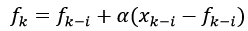
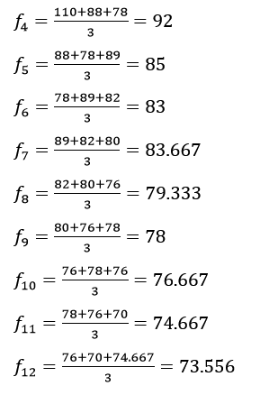
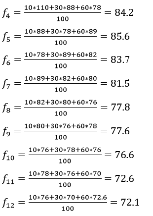
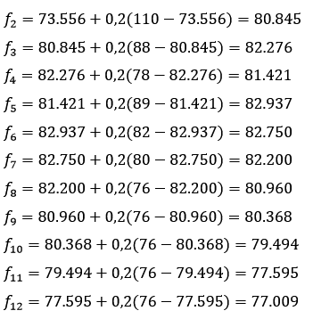
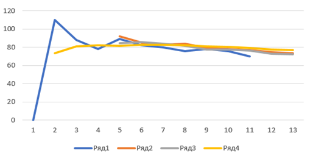

Справка
- О программе Программа предназначена для расчета прогноза тремя методами анализа временных рядов:
- Метод простого скользящего среднего
- Метод взвешенного скользящего среднего
- Метод экспоненциального сглаживания
- Описание задачи
- Постановка задачи
- Математическая модель задачи
- xi-k – реальные значения показателя;
- N – число предшествующих моментов времени, используемых при расчете. На практике N – от 2 до 10;
- fk – прогноз на момент времени tk.
- xi-k – реальные значения показателя в момент времени t k-i ;
- N – число предшествующих моментов времени, используемых при расчете. На практике N – от 2 до 10;
- fk – прогноз на момент времени t k ;
- ωk-i – вес, с которым используется показатель xk-i при расчете. Вес – это всегда положительное число.
- α – постоянная сглаживания, 0 < α < 1. Определяет степень сглаживания и выбирается универсальным методом проб и ошибок. Большее значение α приписывают последним наблюдениям. На практике α берут в пределах от 0,01 до 0,3.
- Алгоритм решения задачи
- Качественные методы - строятся на использовании мнений экспертов.
- Количественные методы - основаны на обработке числовых массивов данных и делятся на:
- анализ временных рядов;
- каузальные методы.
- метод простого скользящего среднего;
- метод взвешенного скользящего среднего;
- метод экспоненциального сглаживания.
- Контрольный пример
- Описание команд меню
- Кнопка предназначена для добавления значения временного ряда.
- Кнопка ❌ предназначена для удаления значения временного ряда.
- Кнопка
 предназначена для сохранения текущих входных
данных в
локальное хранилище.
предназначена для сохранения текущих входных
данных в
локальное хранилище. - Кнопка предназначена для удаления сохранения из локального хранилища.
- Кнопка предназначена для загрузки сохранения из локального хранилища.
- Кнопка предназначена для экспорта сохранений в файл формата .json.
- Кнопка  предназначена для импорта сохранений из файла в формате .json.
- Кнопка предназначена для расчета прогноза методами анализа временных рядов.
- Кнопка предназначена для экспорта результатов прогноза в файл формата .csv.
Требуется написать программу для расчета прогноза методами анализа временных рядов.
Метод простого скользящего среднего. Расчет показателя на прогнозируемый момент времени строится путем усреднения значения показателя за несколько предшествующих моментов времени. Расчетная формула:
, где:
Метод ввзвешенного скользящего среднего. При составлении прогноза часто сталкиваются с ситуацией, что влияние при расчете реальных показателей оказывается неодинаковым. При этом обычно более свежие данные имеют больший вес. Расчетная формула:
, где:
Метод экспоненциального сглаживания. Учитывается отклонение предыдущего прогноза от реального показателя. Расчетная формула:
, где:
В настоящее время насчитывается свыше 140 различных по сложности и научной обоснованности методов и приемов прогнозирования. Существующие методы составления прогнозов условно можно разбить на 2 группы:
Для решения задачи методом простого скользящего среднего необходимо заменить значения членов ряда на среднее арифметическое по соответствующему периоду сглаживания.
Для решения задачи методом взвешенного скользящего среднего необходимо исходные значения ряда заменить на средние, вычисленные по периоду сглаживания, взятые с некоторыми весами, отражающими вклад члена ряда в представляемые им закономерности исследуемого процесса.
Даны объемы продаж товара за 10 месяцев текущего года. Необходимо дать прогноз продаж на 11 и 12 месяцы.
| момент времени | 1 | 2 | 3 | 4 | 5 | 6 | 7 | 8 | 9 | 10 |
| значение показателя | 110 | 88 | 78 | 89 | 82 | 80 | 76 | 78 | 76 | 70 |
Метод простого скользящего среднего. Расчет производим по формуле:
Пусть N = 3, тогда:
Прогноз на 11 месяц равен 74.667 усл. ед., а на 12 месяц равен 73.556 усл. ед.
Метод взвешенного скользящего среднего. Расчет производим по формуле:
При составлении прогноза объем сегодняшних продаж возьмем с весом 60, вчерашних – с весом 30, позавчерашних – с весом 10.
В итоге получим прогноз на 11 месяц - 72.6 усл. ед., а на 12 месяц - 72.1 усл. ед.
Метод экспоненциального сглаживания. Расчет производим по формуле:
Для расчетов вновь обратимся к исходному временному ряду, положив α = 0,2, и считая, что прогноз на 12 день равен 73.556 усл.ед., тогда:
Прогноз на 11 месяц равен 77.595 усл. ед., а прогноз на 12 месяц - 77.009 усл. ед.
Поостроим график по полученным значениям:
